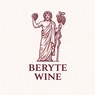

-6000
Les Phéniciens
Premières cultures documentées de la vigne dans la plaine de la Bekaa. Les archéologues y retrouveront des pressoirs taillés dans la roche.

L'accès à notre cave est réservé aux personnes majeures. En entrant, vous confirmez avoir 18 ans ou plus.
L'abus d'alcool est dangereux pour la santé
Notre maison porte le nom que les Phéniciens donnaient à leur cité, il y a trois mille ans. Par cet héritage, une évidence : faire vivre, depuis la Gironde, les cuvées d'une terre qui cultive la vigne depuis six millénaires.
Avant d'être une ville assiégée puis renaissante, Beyrouth fut Beryte : comptoir phénicien, port de cèdre, cour des dieux phéniciens. De ses jarres de vin partaient, vers l'Égypte pharaonique comme vers la Grèce archaïque, les premiers grands crus documentés de l'histoire humaine. Nos bateaux de marchands portaient en cargaison l'ivresse des rois.
La vigne n'a jamais quitté ce pays. Même lorsque les siècles ottomans l'ont réduite au silence, elle a continué de pousser, discrète, dans les jardins des monastères maronites. Puis vinrent les Jésuites de Ksara en 1857, Gaston Hochar à Ghazir en 1930, et une renaissance s'est amorcée. Une renaissance obstinée, traversée des guerres, des blocus, des bombardements. Une résistance faite vin.
Faire du vin ici, ce n'est pas seulement un métier. C'est refuser que la terre se taise. Serge Hochar · Château Musar
La Bekaa, plaine d'altitude enserrée entre les monts Liban et Anti-Liban, offre à la vigne ce que peu de terroirs au monde peuvent donner : mille mètres d'altitude, deux cents jours de soleil par an, des nuits fraîches, des sols calcaires profonds. Les cépages s'y expriment avec une intensité, une élégance, une garde que l'on retrouve à peine dans les grands bordeaux.
Aujourd'hui, cinquante domaines y produisent neuf millions de bouteilles par an. Certains descendent directement des Phéniciens par les cépages autochtones Obeïdy et Merwah. D'autres ont épousé le cinsault, la syrah, le cabernet. Tous racontent la même histoire : celle d'un pays qui, contre toute géographie, fait encore du grand vin.
Premières cultures documentées de la vigne dans la plaine de la Bekaa. Les archéologues y retrouveront des pressoirs taillés dans la roche.
Les amphores libanaises partent vers l'Égypte pharaonique et la Grèce archaïque. Le vin de Byblos accompagne les dieux et les morts.
Les Jésuites fondent Ksara et plantent le premier cépage européen moderne. La renaissance viticole du pays commence.
Gaston Hochar crée Musar à Ghazir. Son fils Serge en fera une légende mondiale, vinifiant même sous les bombes.
Plus de cinquante domaines, neuf millions de bouteilles par an, une reconnaissance internationale. La Bekaa compte parmi les grandes régions viticoles du monde.
Entre les monts Liban à l'ouest et l'Anti-Liban à l'est, une plaine longue de cent vingt kilomètres se déploie à mille mètres d'altitude. Un amphithéâtre naturel où le soleil cogne le jour et où la nuit descend en fraîcheur. Exactement ce qu'il faut à la vigne pour mûrir sans brûler, pour concentrer sans perdre sa ligne.
« Un vin libanais, c'est un vin qui a traversé. »
Repreneur du domaine familial en 1959, Serge Hochar vinifiera même sous les bombes pendant la guerre civile. Couronné « homme de l'année » par Decanter en 1984, il fait de Musar une légende : des vins d'assemblage non filtrés, bâtis pour trente ans de garde.
« Le raisin me dit ce qu'il veut devenir. J'écoute. »
Œnologue formé à Montpellier, Faouzi Issa a repris Tourelles, l'un des plus anciens domaines du Liban fondé en 1868. Travail parcellaire, vinifications minimales, retour aux vieilles vignes de cinsault : sa syrah du Marquis des Beys fait trembler les sommeliers parisiens.
« La Bekaa n'a pas besoin d'imiter Bordeaux. Elle est elle-même. »
Aux commandes de Kefraya, trois cents hectares plantés sur les pentes sud-ouest de la Bekaa, Joe Assaad Labaki a modernisé l'outil sans renier la main. Précision bordelaise, âme libanaise : les cuvées Comte de M et Le Bretèche en sont l'exacte signature.
Deux autochtones phéniciens, quatre français naturalisés. Ensemble, ils dessinent la personnalité unique des vins de la Bekaa : solaires mais droits, puissants mais longs en bouche, toujours reconnaissables entre mille.
Cépage blanc phénicien cultivé depuis six mille ans. Ampélographiquement proche du chardonnay. Donne des blancs de garde profonds, salins, à la minéralité rare.
Second autochtone blanc, souvent assemblé à l'Obeïdy. Base historique de l'Arak, l'eau-de-vie anisée nationale. Notes d'herbes sèches, d'amande fraîche et de figuier.
La star rouge du Liban. Planté dès le XIXᵉ siècle, il trouve dans la Bekaa une intensité qu'il n'atteint plus qu'ici : fruits noirs, épices douces, garde longue.
Colonne vertébrale des grands assemblages libanais. Le calcaire bekaaïote lui donne une tension et une longueur qui évoquent les grands médoc, en plus solaire.
Arrivée plus tardivement, elle exprime ici un caractère poivré, fumé, presque oriental. Star incontestée des nouvelles cuvées de Tourelles et d'Ixsir.
Certaines parcelles de carignan dépassent quatre-vingts ans. Rendements minuscules, matière profonde, âge magnifique : c'est là que se cache l'âme rustique de la Bekaa.
De Musar à Ixsir, huit domaines en huit jours. Les matins sur les pentes calcaires, les déjeuners interminables, les caves fraîches à l'heure la plus chaude. Carnet de route.
Comment Serge Hochar a vinifié pendant quinze années de guerre civile, entre bombardements et blocus. Le récit d'un homme qui a tenu bon parce que la vigne, elle aussi, tenait bon.
Vingt ans, trente ans, parfois quarante. Les vins de la Bekaa défient les codes de la garde : explication par l'altitude, les sols calcaires, les vinifications non filtrées et une pincée de mystère.
Quatre fois par an, les nouvelles cuvées de la Bekaa arrivent à la cave. Les membres du Club Beryte les reçoivent en avant-première, avec nos notes de dégustation et les accords mets·vins de nos sommelières.